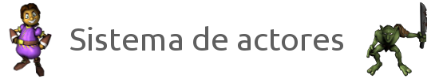
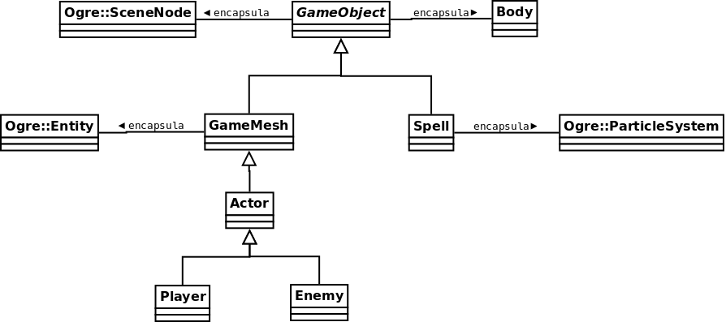
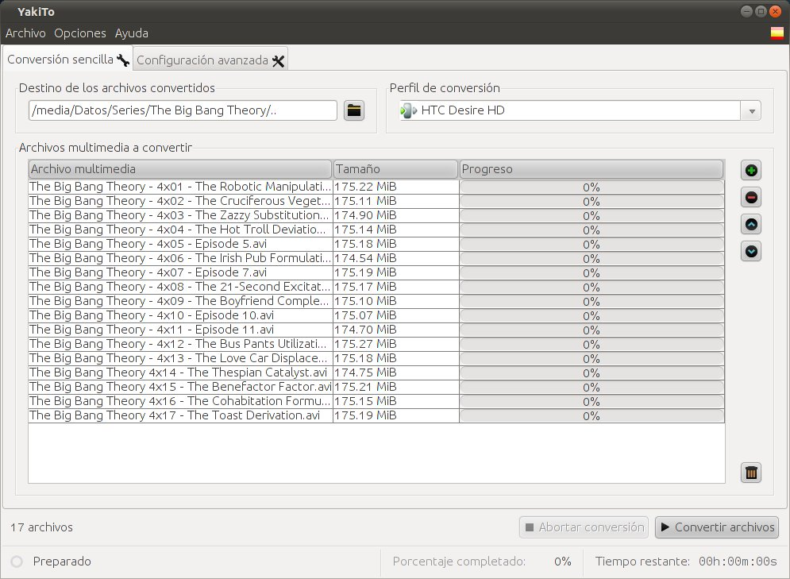
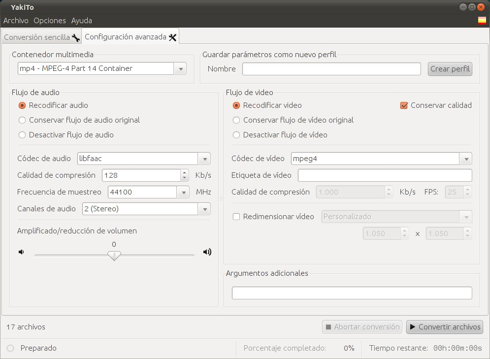
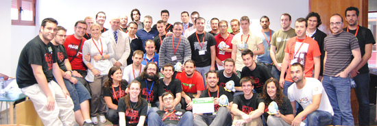
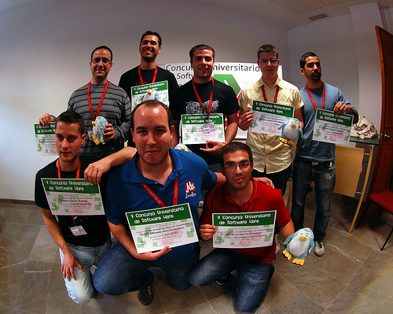

May 24, 2011 · 2 minute read · Comments
Games development

Tras publicar varios artículos en IberOgre, he decidido retomar el trabajo en Sion Tower con el objetivo de tener una versión inicial a finales de julio. La primera tarea que he llevado a cabo es una refactorización del sistema de actores con el objetivo de hacerlo más extensible y evitar la duplicación de código en la medida de lo posible aunque crezca la verticalidad en la jerarquía. Por el momento no todas las clases están implementadas pero sí diseñadas. A continuación, una pequeña explicación del sistema.
El sistema de actores está compuesto por las siguientes clases:
- GameObject: encapsula un SceneNode de Ogre con un Body del sistema de colisiones. Modela de forma genérica todos los objetos del juego.
- GameMesh: hereda de GameObject y le añade un Entity, se utiliza para modelar los elementos del juego formados por mallas poligonales, como el escenario.
- Actor: hereda de GameMesh y añade estados, animaciones y manejadores de estados para los personajes del juego (enemigos y protagonista).
- Player: hereda de Actor y modela al protagonista del juego añadiendo su lógica de control particular.
- Enemy: también hereda de Actor y modela de forma genérica el comportamiento de los enemigos.
- Spell: hereda de GameObject y añade sistemas de partículas para modelar los hechizos del juego junto a sus explosiones.

En GameObject contamos con el enumerado Type para distinguir entre tipos de objetos de juego. Se cuenta con un método getType virtual puro que cada clase deberá implementar devolviendo el valor del enumerado correspondiente. De esta forma podemos conocer el tipo de un objeto de juego a partir de un GameObject* y hacer casting sin peligro en caso de ser absolutamente necesario. También es posible utilizar el tipo de objeto para hacer un filtrado en la detección de colisiones.
class GameObject {
public:
enum Type {
SIMPLEMESH = 0,
FLOOR = 1,
SCENE = 2,
PLAYER = 3,
ENEMY = 4,
SPELL = 5
};
virtual Type getType() const = 0;
...
};
Podéis conocer a fondo el sistema en la rama correspondiente de la Forja de Red Iris. En breve, os mostraré un vídeo con el sistema de lanzamiento de proyectiles mágicos funcionando.
May 20, 2011 · 1 minute read · Comments
Games development
¡Se nota la actividad en IberOgre! He estado trabajando bastante duro estos días para sacar adelante un nuevo artículo: “Sistema de overlays”. En el texto se tratan en bastante profundidad los mecanismos que ofrece Ogre para desplegar paneles e indicadores 2D a modo de GUI o HUD.
Los contenidos que abarca se resumen en:
- Conceptos básicos: qué es un overlay y qué tipos existen.
- Estructura: clases que intervienen, sintaxis de los scripts, paneles, elementos y fuentes.
- Creación y gestión de overlays: cargar overlays definidos en scripts y modificar sus atributos en tiempo de ejecución.
- Ejemplo: pequeña aplicación interactiva que resume el contenido completo del artículo.
Tras este texto y a falta de publicar el bloque de matemáticas (ya redactado), retomaré el desarrollo del videojuego Sion Tower. Pronto tendréis algún artículo con novedades acerca de él.
May 18, 2011 · 2 minute read · Comments
Computing
¿Cuántas veces te has peleado con conversores de vídeo horribles? Acudes a Softonic, tecleas “de .avi a iPod”, descargas el que más estrellas tiene, se instala sin preguntar la enésima barra del navegador, resulta que no funciona y además su interfaz es ultra compleja. Es más que probable que lo que busques sea YakiTo, uno de los mejores conversores que he probado. No, no lo digo porque su creador, Sergio García Mondaray, sea un compañero del V CUSL.
Características
- Software Libre: es gratuito y está liberado bajo licencia GPL.
- Multiplataforma: está escrito en Java (contra todo pronóstico es bastante rápido). Funciona perfectamente en Windows, GNU/Linux y Mac.
- Multilenguaje: disponible en español, inglés, alemán y portugués.
- Compatibilidad entre formatos: internamente utiliza el potente ffmpeg.
- Interfaz sencilla: manejo a prueba de torpes, no tiene pérdida.
- Perfiles de conversión: puedes seleccionar el dispositivo en el que deseas reproducir el vídeo para tener la seguridad de que funcionará sin problemas.
- Configuración avanzada: si dominas la conversión de vídeo puedes personalizar el proceso al completo.
- Conversión paralela: para aprovechar los procesadores multinúcleo, podemos convertir varios vídeos a la vez.

Instalación
La instalación de YakiTo es prácticamente trivial, podemos descargarlo desde la sección correspondiente de su web. En el remoto caso de que no sepamos cómo instalarlo podemos seguir los magníficos tutoriales existentes:

Merecido ganador
YakiTo ha sido galardonado con el premio especial al mejor proyecto en el V Concurso Universitario de Software Libre así que os podéis hacer una idea de su calidad. Desde aquí mi más sincera enhorabuena, es un premio merecidísimo que será útil a muchos usuarios.
A mí ya me ha sacado de un apuro.
May 17, 2011 · 1 minute read · Comments
Games development
No estamos adormilados tras la final del V CUSL porque ya se ha publicado un nuevo artículo en IberOgre. En esta ocasión en “Sistemas de partículas” ofrecemos todos los conceptos necesarios para desplegar efectos especiales en nuestros videojuegos desarrollados con Ogre como destellos, humo, fuego y un largo etcétera.
A vista de pájaro, tratamos los siguientes puntos:
- Conceptos básicos sobre los sistemas de partículas.
- Estructura de un sistema de partículas: propiedades, Emitters y Afectors.
- Creación y gestión de sistemas de partículas.
- La herramienta Particle Editor.
- Ejemplo en el que reproducimos varios efectos.
La sección de matemáticas no está olvidada, en cuanto tengamos operativo el módulo de notación matemática en IberOgre se publicarán los tres artículos previstos. Tras eso ya estaremos más cerca de cumplir los objetivos iniciales.
¡Seguimos informando!
May 14, 2011 · 2 minute read · Comments
Games development

El comité de evaluación y la organización del V Concurso Universitario de Software Libre han emitido su veredicto decidiendo que el proyecto IberOgre y Sion Tower sea galardonado con el premio al mejor proyecto de comunidad. No os podéis imaginar lo contento que estoy por el premio, jamás esperaba llegar tan lejos. Por supuesto, os lo tengo que agradecer a todos los que habéis colaborado de una forma u otra, ¡vosotros sois la comunidad!
La lista completa de premios es la siguiente:
- Premio especial: Sergio García por YakiTo.
- Premio al mejor proyecto de accesibilidad: Raúl Jimenez, Anna Peña y Ruben Dugo por GeoRemindMe!
- Premio al mejor proyecto de comunidad: David Saltares por IberOgre y Sion Tower, ¡esos somos nosotros :-)!
- Premio al mejor proyecto de educación: Luis Arce por JavaDiKt.
- Premio al mejor proyecto de innovación: José Antonio Jiménez por Predesys.
- Premio al mejor proyecto de sistemas: Javier Angulo por Terminal Previewer.
¡Enhorabuena a todos! Unos premios merecidísimos.

Sin lugar a dudas, lo mejor del CUSL ha sido la convivencia este par de días en Granada. Poder conocer a los desarrolladores de estos geniales proyectos, charlar, reírnos, pasarlo bien… No tiene precio y compensa todo el esfuerzo con creces. Por ello animo a todo el que dude participar en el CUSL el año que viene, aunque no lleguen a la final pueden cogerse un tren y plantarse en la Universidad que toque sin problemas, vivir este ambiente merece la pena y se aprende muchísimo.
No puedo finalizar el artículo sin darle las gracias a toda la organización del CUSL. Son unas personas muy abiertas, han estado atentos a todo y han invertido tiempo y sudor para que esto salga adelante. Gracias a Ana Rey por las fotos (Creative Commons 2.0 by-sa).
¡Nos vemos en la !BarraLibreCamp de Cádiz!
Editado: si queréis colaborar con la difusión del V CUSL, podéis darle un meneo a la noticia.